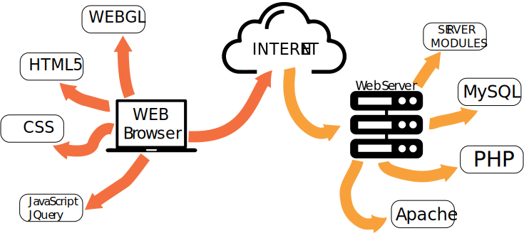

Programming for the internet and beyond..!!
What does Web Programming mean.
"Web programming refers to the writing, markup and coding involved in Web development, which includes Web content, Web client and server scripting and network security. The most common languages used for Web programming are XML, HTML, JavaScript, Perl 5 and PHP. Web programming is different from just programming, which requires interdisciplinary knowledge on the application area, client and server scripting, and database technology."
Programming for the web explanation.
"Web programming can be briefly categorized into client and server coding. The client side needs programming related to accessing data from users and providing information. It also needs to ensure there are enough plug ins to enrich user experience in a graphic user interface, including security measures. To improve user experience and related functionalities on the client side, JavaScript is usually used. It is an excellent client-side platform for designing and implementing Web applications. HTML5 and CSS3 supports most of the client-side functionality provided by other application frameworks. The server side needs programming mostly related to data retrieval, security and performance. Some of the tools used here include ASP, Lotus Notes, PHP, Java and MySQL. There are certain tools/platforms that aid in both client- and server-side programming. Some examples of these are Opa and Tersus."
Programming for Multi Media
This page will add some information and answer some questions about the Creative Multi Media Springboard course with regard to the Programming elements. This course has been running in Limerick Institute of Technology, Ireland for over 8 years. This module introduces the student to programming languages such as Java Script and PHP which are essential and core IT skills. Skills that are very much in demand by employers in a number of the IT sectors. Two programming modules are covered over the two semesters. In semester one emphasis is placed on learning how to code in Javascript.
Web Programming: JavaScript Semester 01
Javascript allows the user to create interactive functions to static web sites that are created in HTML.JavaScript programming language is an essential tool in any web site developers arsenal. It increases the depth and scope of user interactions and provides many fundamental and essential functionality to web sites. JavaScript covered in this module will show how it is used to create dynamic web sites.Dynamic features such as, where the user can log in, become a member, fill in and validate online forms, animate text or images. Learning how to use JavaScript as resource is an essential as it add many features and functions that are not possible through HTML and CSS only.
Advanced Web Programming: PHP Semester 02

What is PHP?
"PHP is a recursive acronym for PHP: Hypertext Preprocessor, a scripting language used to create dynamic and interactive HTML Web pages. A server processes PHP commands when a website visitor opens a page, then sends results to the visitor’s browser."
Changing gears from JavaScript in semester 02 student will tackle PHP. Students will learn how to programme in PHP, using SQL and adding log in and form validation to their web sites. PHP and this module is where a lot of early learning from semester 01 begins to dovetail. Student are introduced to the back end (server side) of programming and how that is the 'glue' that holds a massive amount of sites on the web together.
My Programming Experience
Depending on the students educational and employment history, programming may provide the steepest learning curve of all the modules on the Creative Multi Media SpringBoard. The concepts will be new and require at times deep thought, research and above all practice. Both Javascript and PHP will introduce a new vocabulary, syntax and methodology. We were lucky in the sense that the tutor we had for both modules was an excellent teacher. Taking the time with us and answering questions regardless of how silly or basic they must have seemed. Some students wrapped their heads around it a lot quicker than others, and all of these students were more than kind and patient in helping us whom were less fortunate in our understanding.
©Eoin Mcaffrey K00143009
©Eoin Mcaffrey K00143009